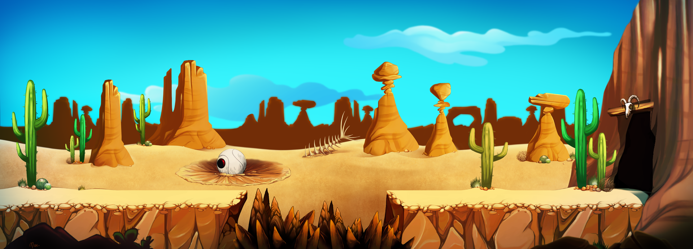
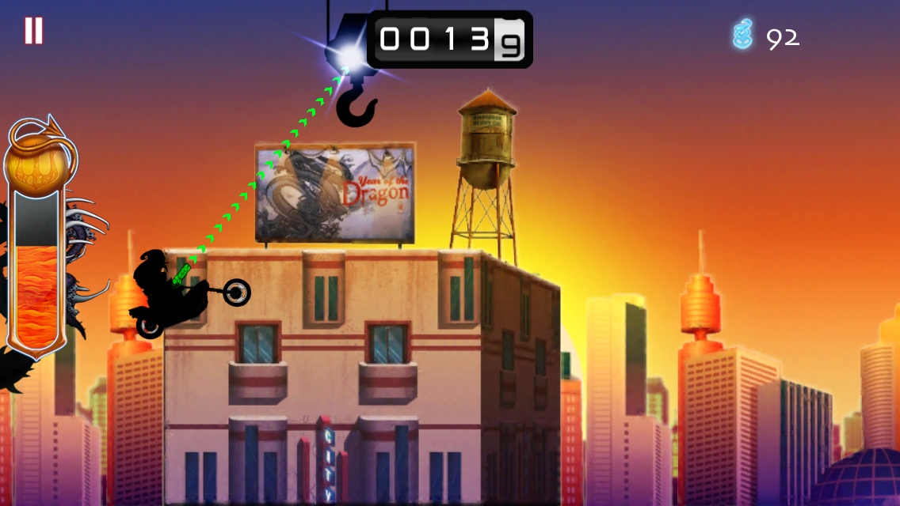
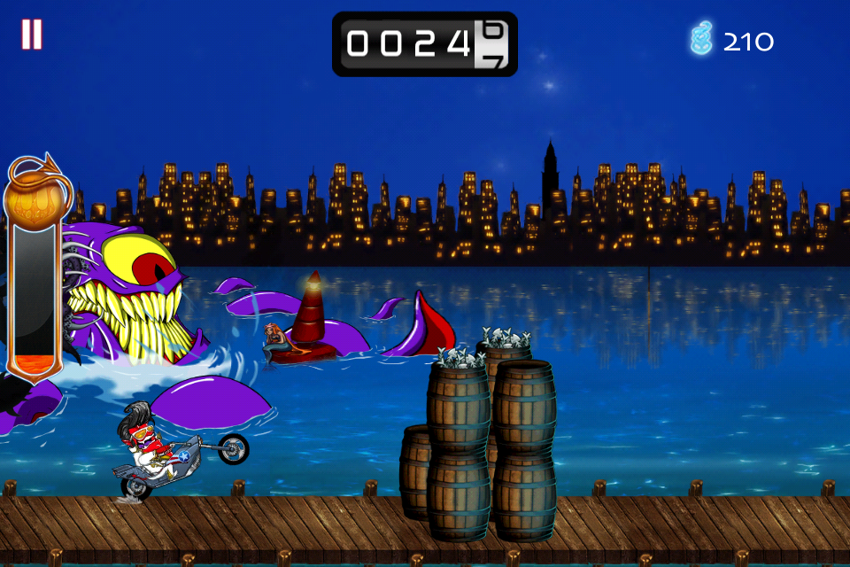
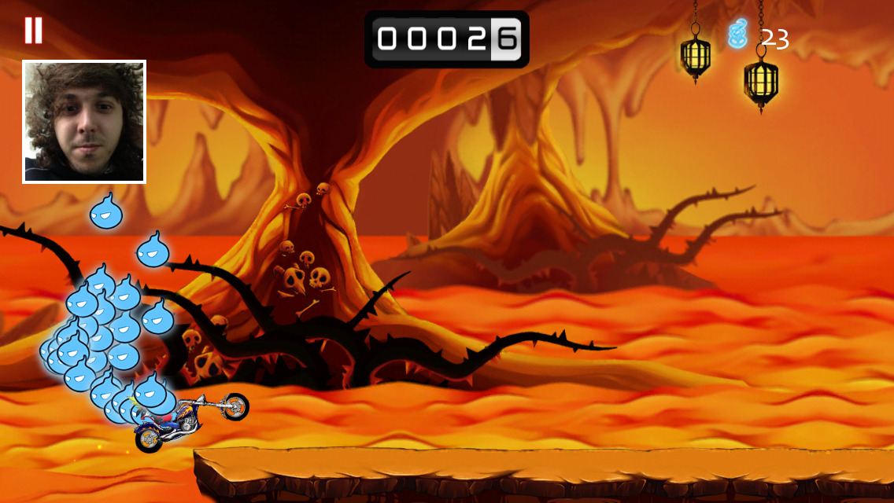

Soul Rush
Soul Rush is an endless runner about a demonic biker on a ride across the apocalypse.
The player has to stay alive for as long as he can, collecting souls, fighting angels and destroying obstacles.
To this end, Rad, the main character, has at his disposal his trusty grapple gun, with which he can vault past long distances, as well as his demon dash, which temporarily turns him and his bike into a fireball, destroying everything in its wake.The game is comprised of several different zones, spanning everything from hell itself to the rooftops of the city, across the desert and the pier. The cataclysm has also uncovered an eery underground train tunnel, but no train can still be running during the apocalypse… can it?
| Role | Project Manager and Lead Programmer |
| Company | Awesome Software S.A. |
| Dates | February 2013 – October 2014 |
| Genre | Endless Runner |
| Platforms | iOS, Android, Windows Phone |
| Technologies | Unity3D, Visual Studio, C#, Everyplay |
| iOS URL | Soul Rush on iTunes |
| Android URL | Soul Rush on GooglePlay |
| Windows Phone URL | Soul Rush on Windows Store |
| Status | Released |
Up to five parallax layers
At one point, we had a serious issue on Soul Rush. There was just too much art! The mobile devices couldn't take everything our artists brought to life, so a lot of difficult choices had to be made. The end result is a selection of beautifully illustrated settings, some with up to five parallax layers. It was a challenge to have all of this run smoothly, but the end result speaks for itself!
Different zone, different theme
The look and feel of the game changes drastically from zone to zone. On the rooftops, Rad and his bike are mere sillhouettes against the urban sunset, while in the underground tunnel, nightvision turns on, and everything is in shades of dark green.
Ancient foes awaken!
The demons and angels are not the only ones roaming the land: the end of the world has caused quite a stir, awakening powerful and ancient denizens of the underworld, such as the Kraken and the Purgatory Train.
Record your reactions!
At one point, we decided it would be fun if the players could record themselves playing, and share their reactions on the internet.
Thanks to Everyplay, integrating this feature was pretty much hassle-free. Everyplay lets you share your video recordings on Facebook, Twitter and by email. Their team was pretty cool throughout the process, and contacted us at one point, just to make sure everything was alright on our end. Ten out of ten!
A risky gamble… but all’s well that ends well!
Near the end of the development cycle, the game was running into issues. The mechanics didn’t fit together, the textures were bloated and there was no mobile device capable of running it. I was put in charge of fixing it, and given two months to do it.
At first I tried to optimize what we had done, but after a bit of soul-searching, I decided to take a leap of faith and attempt to rewrite the entire game from scratch, based on the knowledge and experience our team had accumulated over the past year.
In the end, we were able to meet the deadline, delivered a smooth and stable product, and the team moved on to our next project, having a whole new bag of tricks up our sleeves!